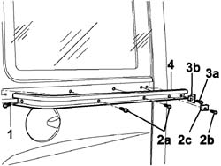

7020C23 Centre sliding GUIDE for sliding side door, right or left - R.R .
- Path
- Procedures > 70 FITTINGS > 7020 LOAD CARRYING COMPARTMENT DOORS > 7020C sliding side door > 7020C23 Centre sliding GUIDE for sliding side door, right or left - R.R .
- Kind
- repair procedure (removal / refitting; the operation number is the code)
- Applies to
- engines: 1.4 8v, 1.6 16v, 1.3 JTD 16V, 1.9 JTD 8V; all production periods
- Interactive page
- https://sloeber94.github.io/elrnDB-fDbl/en/#/2585054
Applies to: engines: 1.4 8v, 1.6 16v, 1.3 JTD 16V, 1.9 JTD 8V; all production periods; only with equipment: 7 seater
 Removing
Removing
 Refitting
RefittingCarry out
Op. 7020C22 SLIDING DOOR WINDOW GLASSES LEFT OR RIGHT - R+R.
1. Unscrew the bolt with the sliding door open and fastenened at the end of its travel.
Close the side door as far as necessary and lock.
2. Unscrew bolts (2a) and bolt (2b) securing rubber block (2c).
3. Unscrew bolt (3a) and recover central guide base (3b).
4. Remove the central slide guide.

Applies to: engines: 1.4 8v, 1.6 16v, 1.3 JTD 16V, 1.9 JTD 8V; all production periods; only with equipment: 7 seater
Refitting
RemovingPosition the central slide guide by locating the reference pin present on the guide in its seat.
Tighten the bolts securing the guide base, the rubber block and the central slide guide.
Carry out
Op. 7020C17 CENTRE SUPPORT AND SLIDING DEVICE FOR ONE SLIDING SIDE DOOR, LEFT OR RIGHT - R.R..